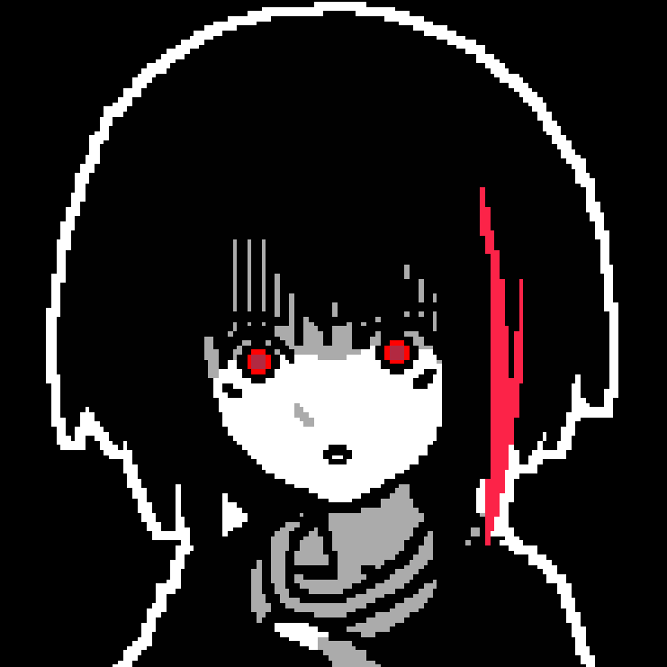

home
about
projects
credits
amemoia
Yo 👋 This is where I put down all my nerdy interests.
Right now I'm trying to get through the Yakuza series.
Someday I'd like to go back and 100% some of the games.
I also like to hang out in FFXIV from time to time.
FFXIV
Server: Phoenix (Light) FC: Rapid Synthesis <RNG>
Main Jobs: 🏹 Bard 🍙 Samurai
Alt Jobs: 🛡️ Paladin 🤍 White Mage ❤️ Red Mage
MSQ Progress: Early Endwalker
Yakuza
Currently on: Yakuza 6Checklist:
- ✅❤️🔥 Yakuza 0 (32.62% @ 41 hrs)
- ✅👍 Yakuza Kiwami 1 (48.44% @ 27 hrs)
- ✅💖 Yakuza Kiwami 2 (147/303 @ 25 hrs)
- ✅👍 Yakuza 3 (7.62% @ 18 hrs)
- ✅👍 Yakuza 4 (4.4% @ 18hrs)
- ✅😐 Yakuza 5 (5.74% @ 44hrs 💀)
- ✨ Yakuza 6
- 🕒 Yakuza: Like a Dragon
- 🕒 Like a Dragon Gaiden
- 🕒 Like a Dragon: Infinite Wealth
Other games I like
Undertale / Deltarune Sonic Unleashed / Generations / Frontiers
OMORI Portal 2 Honkai: Star Rail